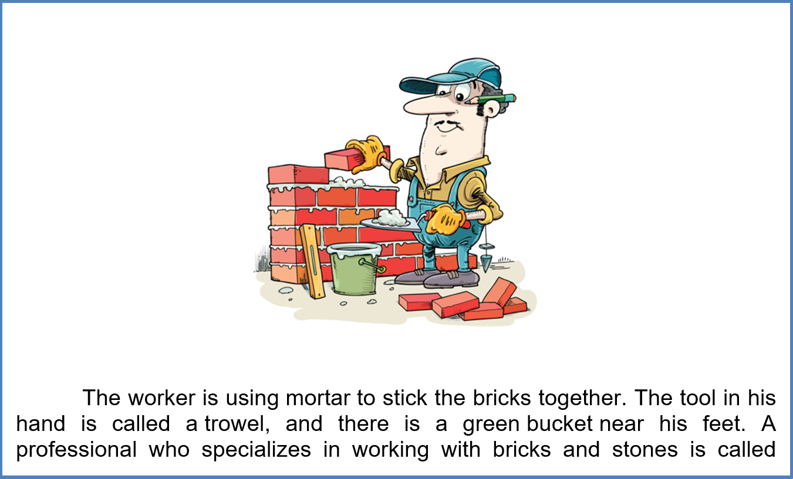
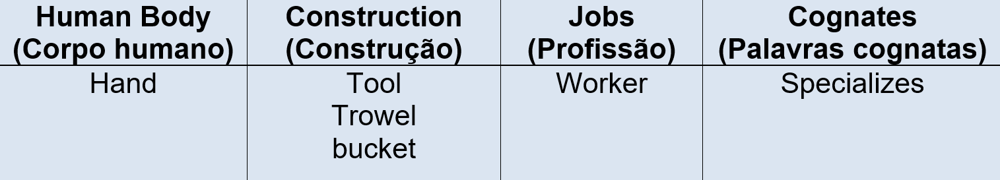
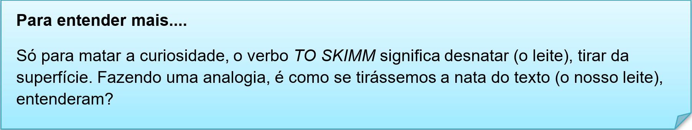
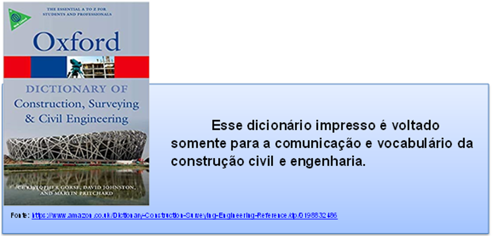

Capítulo 1: Construction, Wood and Furniture - Construção, Madeira e Mobiliário
Então você se depara com essas informações em língua inglesa. No primeiro momento assusta, mas não se desespere, vamos ver passo a passo como compreender um texto estrangeiro. Para isso vamos “construir” nosso vocabulário lexical sobre construção civil. Vamos ler com atenção as informações e analisar as palavras com atenção. Observe nosso trabalhador, vamos ver suas atividades e seus instrumentos de trabalho.

Nesse texto temos a presença de vários elementos gramaticais e um vocabulário variado que vai de cores, partes do corpo humano a materiais de construção civil.
Trata de uma narrativa descritiva do trabalhador (the worker). Vamos à tradução:
O trabalhador está usando argamassa para colar os tijolos. A ferramenta em sua mão é chamada de espátula e há um balde verde perto de seus pés. Um profissional especializado em trabalhar com tijolos e pedras é chamado de pedreiro.
Let’s practice! Vamos estudar e analisar nosso texto narrativo
Destaque palavras que você conheça. Muitas palavras inglesas são semelhantes as da língua portuguesa, são o que chamamos de palavras cognatas.
Faça a leitura da imagem que acompanha o texto (quando houver), pois imagens ajudam na compreensão também.
Essas duas técnicas de compreensão possuem os seguintes nomes:

Skimming e scanning
Volte ao texto e a tradução e complete o quadro com as palavras solicitadas.

Contextualizando
SKIMMING nada mais é do que fazer uma leitura rápida do texto para captar os conceitos e as idéias principais, ou seja, você faz uma exploração geral do texto sem se deter em um ponto específico. SCANNING também envolve dar uma lida rápida, mas usamos esta estratégia quando queremos encontrar algo específico no texto, isto é, nós sabemos o que estamos procurando. É exatamente o que fazemos com um SCANNER quando queremos copiar um texto: selecionamos uma informação específica e nos fixamos nela.
Biblioteca – dicionários
Para iniciantes é preciso ter um bom dicionário a mão ou no celular, já que utilizamos a tecnologia diariamente. Vamos a nossa BIBLIOTECA com dicas de dicionários. Algumas editoras possuem dicionários com vocabulário específico. Os mais utilizados são da linha Oxford. Veja na nossa dica cultural.

Para os mais tecnológicos há inúmeros aplicativos de dicionários, segue uma dica para utilização em off-line.
Glossário - Pictionary
Glossário é uma espécie de dicionário de tamanho reduzido que serve como apoio em um determinado texto. Já o pictionary é a associação de imagem e palavra. Um dicionário ilustrado. Vamos conhecer mais palavras relacionadas à construção civil. Ferramentas e equipamentos.
Veículos de construção são importantes na construção civil, vamos conhecer alguns.
Você sabia?
A indústria no espaço norte americano é distribuída de forma variada, a região nordeste e centro-oeste é bastante industrializada, país denominado de Manufacturing Belt (cinturão das manufaturas).
A área que corresponde à produção industrial e manufatura, principalmente de indústria têxtil, eletrônica, automobilísticas, tem diminuído sua atuação devido ao surgimento de novos núcleos industriais na costa oeste e sul do país denominada de Sun Belt (cinturão do sol), que tem como principais atividades produtivas a indústria aero, militar e espacial.
Parts of the house - Partes de uma casa
Dining room – sala de jantar;
Kitchen – cozinha; (não confunda com chicken - galinha)
Bedroom – quarto;
Closet – guarda-roupa ou espécie de quartinho de roupas;
Bathroom – banheiro;
Garage – garagem;
Office – escritório;
Door – porta;
Window – janela;
Garden – jardim;
Stairway – escada;
Balcony – sacada, varanda;
Lobby – corredor;
First floor – primeiro andar;
Second floor – segundo andar;
Upstairs – andar superior;
Downstairs – andar inferior;
Roof –telhado.
UK x US? Relembrando a história
No pictionay “types of house” há um tipo de casa que possui dois nomes. Block of flats e apartament building. No final de cada nome há US e UK. Você sabe o que é? US significa UNITED STATES – Estados Unidos. UK, UNITED KINGDOM - Reino Unido. Aqui ocorre a situação que chamamos de inglês americano (US) e inglês britânico (UK).
O que aprendi
• Nessa unidade aprendemos as técnicas de leitura de textos estrangeiros, técnicas essas chamadas de skimming e scanning;
• Observamos que há palavras inglesas muito semelhantes com as do português, que é o que chamamos de palavras cognatas;
• Ampliamos o vocabulário relacionado à construção civil, que vão do maquinário, objetos e a obra final;
• Verificamos as diferenças entre o inglês americano e britânico.
Praticando
1.Let’s practice! Think! Você foi contratado para realizar uma montagem e instalação de um painel. Quais tools (ferramentas) precisa levar? Faça uma lista em inglês.
List of tools
Hammer
Nail...
2. Você precisa realizar uma obra simples em casa. Então recebe esse folder, será que o serviço do Mike Stansfield lhe ajudará? Responda as questões em inglês, explore seu material para isso.
a. Quais serviços Mike realiza?
b. No folder há algumas palavras cognatas, quais são elas?
c. Observando as atividades do Mike, quais ferramentas ele deve utilizar no trabalho?